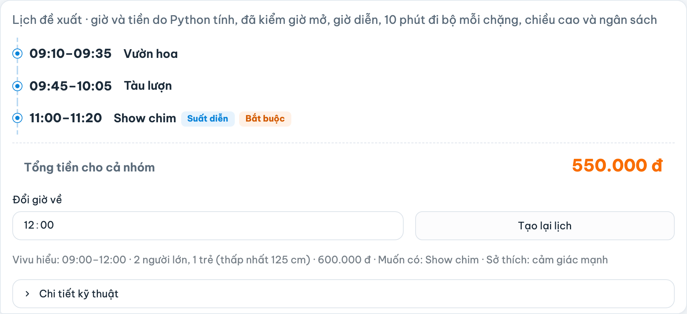
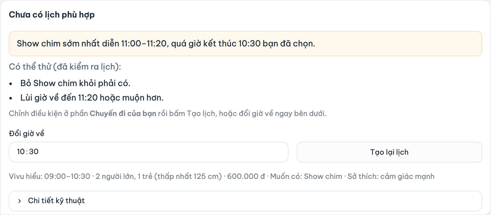

Sao Cũng Được · Track C · C1 · Vivu
Phụ huynh tự ghép giờ show, giờ đóng trò, đường đi và chiều cao của bé
Người dùng: phụ huynh tự lên kế hoạch đưa trẻ dưới 12 tuổi đi một khu vui chơi trong một buổi, có giờ vào và giờ phải về.
Tín hiệu từ review công khai
2/15 review (13%) chủ động kể hoặc khuyên canh giờ show, giờ trò
Lượt đọc thăm dò, 15 review đọc được, sắp theo mới nhất · tiêu chí đếm ghi trước khi đếm
“Making sure you take photos of the show timetables”
— R15, một gia đình đi VinWonders Nha Trang (đã bỏ tên)
Nguồn đạt ngưỡng (CP3)
[CẦN NHÓM] Kết quả khảo sát phụ huynh (≥20 người ngoài nhóm): x/N người gặp lỡ show, trò đóng hoặc bé thiếu chiều cao (câu 7), hoặc ≥3 phỏng vấn ghi x/n người.
[CẦN NHÓM] ≥1 trích dẫn nguyên văn từ phỏng vấn hoặc khảo sát (đã bỏ tên).
Nguồn: evidence/data-mining.md · Traveloka, đánh giá VinWonders Nha Trang, xem 27/11/2026 · evidence/hypothesis.md1 / 8
Vì sao chọn bài này
Ghép show với đường đi: chỗ gia đình phải tự tính nhiều nhất
Ba hướng đã cân nhắc
| Hướng | Tín hiệu | Quyết định |
|---|
| Ghép show với đường đi, giờ đóng, chiều cao | R04, R15 | Chọn |
| Chọn hoạt động thay khi trò đóng | R01, R07 | Gộp vào: nhập điểm đóng |
| Xử lý khi vào khu muộn | R08 | Gộp vào: đổi giờ đến, giờ về |
Impact tháng
số gia đình × số lần phải xếp lịch / tháng × phút mất / lần
[CẦN NHÓM] Điền 3 thừa số từ khảo sát (câu 6 phút chuẩn bị, câu 9 số lần đổi kế hoạch, câu 11 số lần đi / năm) và phỏng vấn. Chưa có số đo thì ghi “chưa đo”.
Nguồn: spec.md §2 · evidence/data-mining.md (R01, R04, R07, R08, R15)2 / 8
Giải pháp · Vivu
Một câu kế hoạch → một lịch kịp giờ, kèm tổng tiền cả nhà
Lát cắt: một phụ huynh · nhập giờ, nhóm khách, ngân sách, điểm muốn đi · AI chọn một lịch khả thi theo sở thích · nhận giờ từng điểm và tổng tiền.
GeminiĐọc câu chat, rút giờ, số người, chiều cao bé, ngân sách, điểm muốn đi
→
Python kiểmLiệt kê mọi lịch 1–3 điểm: giờ mở, giờ diễn, 10 phút đi bộ mỗi chặng, chiều cao, ngân sách
→
Gemini chọnMột lịch trong danh sách đã kiểm, theo sở thích (ít đi bộ, cảm giác mạnh…)
→
Hiển thịGiờ và tiền lấy từ lịch Python đã kiểm; bỏ mọi chữ model tự viết thêm
Không có lịch
Nêu đúng ràng buộc đang chặn kèm số và tối đa 3 gợi ý đã chạy lại bộ kiểm là ra lịch.
Thiếu thông tin
Hỏi lại đúng trường còn thiếu (giờ, số trẻ, chiều cao, ngân sách). Trẻ đi không có người lớn: chặn bằng code.
AI tự làm đến đâu
Chỉ đề xuất. Không bán vé, không thanh toán. Khách tự quyết dùng lịch hay đổi điều kiện.
Nguồn: spec.md §4 (sơ đồ theo code) · codebase/agent.py, tools.py · Vịnh Mây là khu vui chơi mô phỏng3 / 8
Demo live · gọi Gemini thật
Thử ngay trên web Vivu

Ca thường: “2 vợ chồng với bé cao 1m25, 9 giờ tới, 12 giờ về, 600 nghìn, nhất định xem Show chim, bé thích cảm giác mạnh” → Vườn hoa, Tàu lượn, Show chim 11:00–11:20 · 550.000 đ

Ca khó: “đổi giờ về 10h30” → không có lịch vì Show chim diễn 11:00–11:20; gợi ý “lùi giờ về đến 11:20” hoặc bỏ Show chim.
[CẦN NHÓM] Link video 30 giây (YouTube không công khai / Drive) và URL web đã deploy.
Nguồn: web streamlit_app.py · ảnh chụp web Vivu 27/11/2026, gọi gemini-3.1-flash-lite thật · dữ liệu mô phỏng4 / 8
Đánh giá thế nào
26 câu thử, 4 metric, chuẩn đạt khoá từ CP2
Bộ đo
- Dữ liệu: khu Vịnh Mây mô phỏng, 5 điểm (3 trò, 2 show)
- 26 câu: 10 thường · 13 khó · 3 từ chối · 9/26 từ review thật
- Cặp sát biên: đến cổng 10:50 / 10:51 · bé 119 / 120 cm · thiếu 1 đồng · show mở / đóng
- Chuẩn đạt (§7): ≥5/6 câu đạt (22/26) · 100% lịch hợp lệ · 100% giờ và tiền khớp · 100% câu từ chối đạt
Lượt 1 → lượt 2 · gemini-3.1-flash-lite
| Lượt 1 | Lượt 2 |
|---|
| Run ID | run-1@20261127-202533 | run-2@20261127-202738 |
| Người chấm (x/26) | [CẦN NHÓM] | [CẦN NHÓM] |
| Kiểm tự động: lịch hợp lệ, khớp số | 12/12 | 12/12 |
| Token vào cả bộ | 3.674 | 5.091 |
Lỗi chính: “ít đi bộ”, “chỉ muốn xem show” bị chọn lịch nhiều điểm. Cải tiến: gửi model bản tóm tắt có phút đi bộ, giờ xong, số show → 2/8 → 0/8 câu sai khi thử ngoài bộ.
Nguồn: eval/benchmark.csv · eval/metric_spec.yaml · spec.md §7 · eval/report.md · eval/explore-preferences.md · eval/run-1.csv, run-2.csv5 / 8
Chi phí khi dùng thật
Chi phí model không phải điểm nghẽn
Mô phỏng 50 phiên · seed 42 · token đo thật
$0,00021 / phiên · gemini-3.1-flash-lite
| Model | / tháng thấp | cơ sở | cao |
|---|
| gemini-3.1-flash-lite | $0,10 | $0,41 | $1,02 |
| gemini-3.8-flash (giá 2027) | $0,60 | $2,41 | $6,03 |
500 / 2.000 / 5.000 gia đình mỗi tháng (tự ước tính) · giá từ bảng giá BTC xem 25/11/2026
Còn phải chốt
[CẦN NHÓM] Chi phí / task thành công = chi phí / phiên ÷ tỉ lệ đạt lượt 2. Chấm xong run-2 rồi chạy python run.py simulate --rate-from eval/run-2.csv.
[CẦN NHÓM] So với impact / người / tháng và thay số người dùng, persona bằng số khảo sát.
Bản chatbox gọi thêm 1 lần model để đọc câu: đo thử 1.821 token vào so với 994, ước tính gấp 2–3 lần bảng bên trái.
Nguồn: cost/cost-estimate.md · cost/simulate-1-summary.md (simulate-1@20261127-191410) · cost/personas.yaml6 / 8
Kết luận
Go / Iterate / Stop
Pain (trang 1)
2/15 review chủ động canh giờ.
[CẦN NHÓM] Kết quả khảo sát, phỏng vấn.
Chất lượng (trang 5)
12/12 lịch hợp lệ, khớp số ở cả hai lượt (kiểm tự động).
[CẦN NHÓM] x/26 người chấm so với 22/26.
Chi phí (trang 6)
Dưới $7 / tháng kể cả model đắt hơn.
Đề xuất để nhóm chốt
Iterate: phần kỹ thuật chạy được và rẻ; điều còn thiếu là bằng chứng gia đình thật sự mất bao nhiêu phút cho việc này.
[CẦN NHÓM] Chốt Go / Iterate / Stop sau khi có điểm chấm và kết quả khảo sát.
Nguồn: trang 1, 5, 67 / 8
Nếu có thêm 1 tuần
Ba việc tiếp theo
1 · Đo đúng điều người dùng muốn
Thêm câu benchmark đo mức khớp sở thích (“ít đi bộ” → lịch ít điểm nhất). Lỗi lượt 1 chưa có trong bộ.
2 · Giảm token
Rút gọn bản tóm tắt gửi model: lượt 2 tăng 39% token vào. Chỉ gửi các lịch tốt nhất theo luật.
3 · Nguồn từ người dùng
Thêm câu thử có nguồn phỏng vấn; hỏi phụ huynh có cần lọc trong nhà / ngoài trời không.
[CẦN NHÓM] Phản hồi của ≥2 người ngoài nhóm dùng thử (validation/log.md), và điều nhóm sẽ đổi theo phản hồi đó.
Nhóm Sao Cũng Được · Trần Quốc Tuấn Khanh · Đỗ Phương Nam · Nguyễn Bình An · Nguyễn Văn Ngọc Sơn
Nguồn: eval/report.md mục 4 · validation/log.md8 / 8